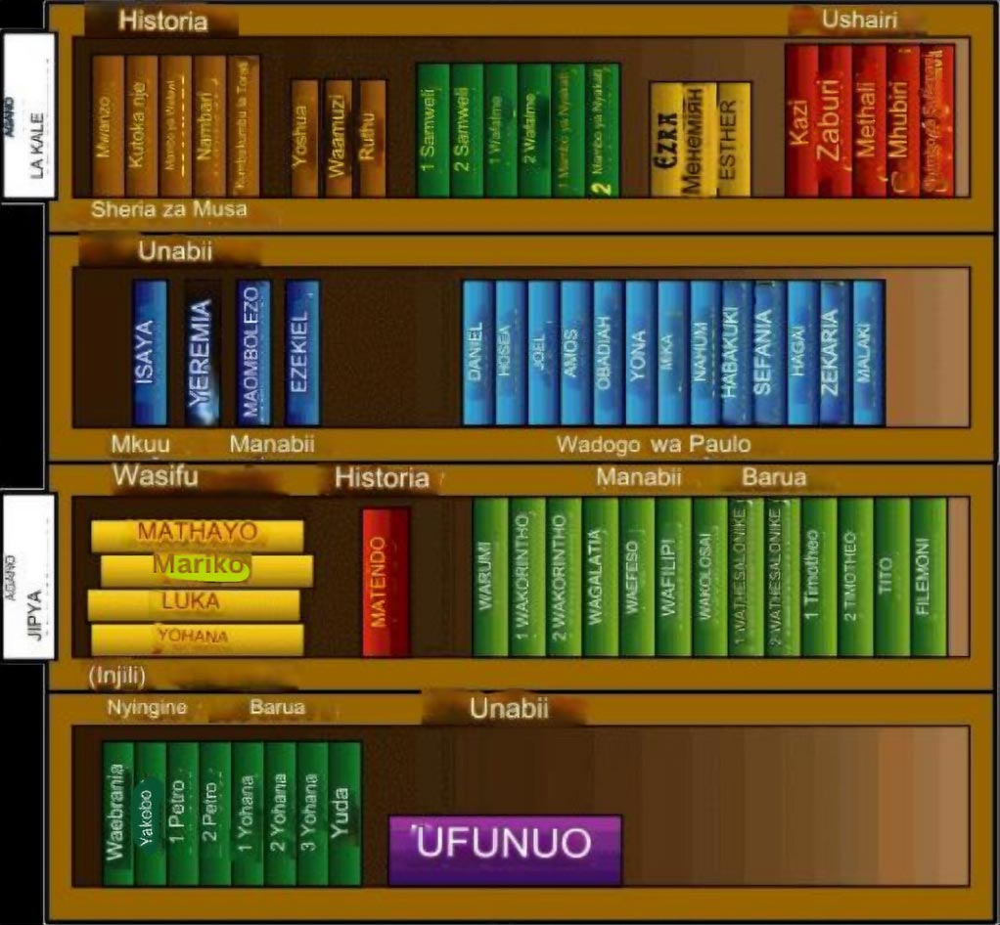

Bibilia ni nini?
Kitabu Kimoja Kubwa?
Mojawapo ya vitu unaweza gundua juu ya Bibilia ni kuwa si kitabu kimoja hakika, lakini ni mkusanyiko wa vitabu sitini na sita (66) Hata kama tunaviita vitabu, hakika Bibilia inashirikisha hadithi, historia, mashairi, na nyimbo, wasifu, na barua kadhaa. (Hii ilikuwa kabla ya kuja kwa barua meme, kumbuka?)
Kwa kuwa ina maandishi mengi tofauti, Kwa hivyo Bibilia haisomwi kutoka jalada hadi jalada kama ilivyo kwa vitabu vingine vya kisasa. (Hata kama inaweza kuwa hivyo). Badala yake, waumini huenda kusoma mafungu maalum. Kama hadithi kumhusu Yesu au nyimbo zilizoandikwa kumtukuza Mungu.
Picha hiyo hapo juu (na ile kubwa Mwanzo wa kitabu hiki) huonyesha jinsi vitabu vya Bibilia vimegawanywa kwenye makundi.

Kuelewa mbona biblia ni jumla ya vitabu mbalimbali ni kutusaidia kuelewa kidogo juu ya historia ya bibilia na vile ilikuja kuandikwa. Mungu alianza kuhamasisha watu kuandika ujumbe wake kwenda kwa mwanadamu karibu miaka elfu tatu (3000) iliyopita (tarehe za mapema hazijatajwa vyema) katika kipindi karibu takriban miaka 1600 waandishi tofauti tofauti arobaini kwa vipindi tofauti vya Historia maeneo tofauti ya ulimwengu walinakili kile Mungu aliwahamasisha kukisema. Mbali na kuwa kwa waandishi tofautitofauti kwa ujumla Bibilia inazungumzia hadithi moja: hadithi inayo ongooza watu kwa; Yesu yeye aliye ujumbe mkuu wa Mungu kwa ulimwengu.
Bibilia inawezakuwa na mwonekano wa kitabu kimoja KIKUBWA. watu wengine wanafikiria ama wamesikia kuwa bibilia ni ya ajabu ama ni ngumu kuielewa. Wamekwishambiwa kuwa wahubiri au wanaohudumu ndio huielewa biblia.
Hii ndio maana hiki kitabu husaidia kujua Bibilia ni nini HASA: ujumbe wa Mungu kwa watu WOTE kila mahaliuliokusudiwa kusomwa na watu wa kawaida (kila mtu).

Agano ni nini?
Neno agano laweza kutufanya kufikiria juu ya wosia (wosia wa mwisho na agano) hati za kisheria zinazotangaza mapenzi ya mtu kwa mali yake au anachomiliki akishakufa. katika bibilia, kitambo kabla Yesu aje duniani, Mungu mwanzo alitangaza wosia wake kuwa watu wamjue na kumwabudu kama Mungu pekee. ili Mungu aweze kuwasamehe binadamu dhambi zao. Kipengele cha kwanza cha bibilia katika bibilia agano la kale ni hadithi vile binaadamu hawakufuata uwosia wa Mungu.
Kwa kuwa mwanadamu hakufuata wosia wa Mungu, Mungu akaweka njia mpya kwa wao kusamehewa: akamtuma Yesu mwanawe wa pekee, duniani ili afe kwa ajili ya dhambi zao. Hadithi za Yesu na wale walio chagua kumfuata ni hadithi za agano jipya la Mungu, ama wosia, kwa kisassi cha mwanadamu alicho kiumba, kwa hivyo bibilia imegawanyika kwa agano la kale na jipya: vitabu vivyoandikwa kabla ya Yesu kuja duniani na vile vilivyoandikwa baadaye.
Nawezaje kupata Fungu ndani ya Bibilia?
Kufanya kusoma bibilia rahisi inasaidia sana ukijifahamisha na majina ya vitabu vya bibilia. Hata kama itaonekana kuwa kazi ngumu itasaidia sana UKIKARIRI majina yote kwa mpangilio. Ifanye kuwa changamoto kwako kukariri majina 10 kwa siku. Unapoanza kuyakariri yanayofuata kumi hakikisha umekariri ya siku iliyopita mwanzo ndio uweze kukariri, ili ukaweze kukariri.
Mpangilio wa vitabu vya biblia pamoja na ufupisho wao. kugagwa katika agano la kale na agano jipya iko katika ukurasa ujao. Tumia hii kama mwongozo wako ili uyakariri. Majina mengine yanaweza kuwa magumu kutamka, kama una swali lolote usisite kumuuliza mwalimu wako wa kusoma bibilia ama mtumishi kataka kanisa unaloenda.
Fungua Bibilia kurasa wowote na utaona aya nyingi ndogondogo kila moja ina nambari. hii inaitwa mistari. Fungu la mistari inatengeneza inaitwa sura. (sio sura zote zina mistari inayotoshana) isipokuwa kitabu cha Obadia katika agano la kale na kitabu cha Filemoni, Yohana wa 2 na 3 na Yuda katika agano jipya; vimegawanywa kwa milango.

Wakati watu wanarejelea kifungu fulani katika Biblia wanatumia neno liitwalo mlango na kifungu. Kama mtu anataka utafute kifungu cha kumi na sita katika mlango wa tatu katika kitabu cha Yohana. unaona kimeandikwa namna hii: Yohana 3:16 kama ndio kukariri vitabu vya Bibilia husaidia sana. Nyinyi wote mwajua kuwa Yohana ni kitabu cha nne katika agano jipya Baada ya kupata kitabu cha Yohana unatafuta mlango wa tatu na mwisho unatafuta kifungu cha kumi na sita. Marejereo yote ya Biblia yanaandikwa kama vile Yohana 3:16 (wakati mwingine ufupisho wa kitabu hutumika.)
Kama tunarejerea Zaidi ya kifungu kimoja itaandikwa hivi Kutoka 20:1-17. hii inamaanisha kuwa utapata vifungu vya kwanza kumi na saba katika mlango wa ishirini katika kitabu cha Kutoka.
- Mwanzo
- Kutoka
- Walawi
- Hesabu
- Kumbikumbu la Torati
- Yoshua
- Waamuzi
- Ruthu
- 1 Samueli
- 2 Samueli
- 1 Wafalme
- 2 Wafalme
- 1 Mambo ya Nyakati
- 2 Mambo ya Nyakati
- Ezara
- Nehemia
- Estheri
- Ayubu
- Zaburi
- Methali
- Muhubiri
- Wimbo
- Aisaya
- Yeremaya
- Maombolezo
- Ezekieli
- Danieli
- Hosea
- Yoeli
- Amosi
- Obadia
- Yona
- Mika
- Nahumu
- Habakuki
- Sefania
- Hagai
- Zekaria
- Malaki